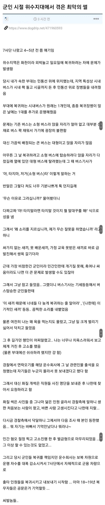

화천 시발 좃같은 동네
개새끼들이네 진짜… 개씹후진국인데 완전 저기동네는
후져
나도 7사 나왔는데 부대별로 복귀차량 운용하는거 아니었음? 민간인이 운전하는 차를 타고 복귀하는 부대도 있었냐
부대별로 북귀차량을 운용한거면 니네 부대가 좀 큰 거 아님?
난 다른 사단 틀딱이긴 한데 외진 곳이거나, 독립중대&포대의 경우 택시타고 귀환밖에 없어서 3-4명씩 연락해서 나갈 때랑 돌아올 때 맞춰서 택시 같이 탔었음
나는 포천 쪽이었는데
출타자 많이 복귀하는 날은 버스 있었음
항상 택시 탓는데
복귀 버스 같은건 애초에 있지도 않았음
아마 저런 사례가 쌓이고 쌓여서 부대별로 복귀차량 운용하는거 아니었을까?
내가 저 친구보다 군번이 많이 빠름
운수회사가 운행 차수를 감소시키면 자기네들도 손해 아닌가?
저런 군대랑 계약하는거는 입찰 들어가서 용역 맺은거일거임 이미 계약된 상태고 계약된 금액이 있는데 ㅈ까라하고 운행 차수 감소시킨듯 ㅁㅊ회사 ㅋㅋ
양구 화천 그짝 군부대 지역은 다 하나같이 썩어빠짐
애초에 한남들 끼리 부터 군인 공익 비하 ㅈㄴ 하니까 ㅋㅋㅋㅋ
군대 갔다온 놈들도 군인을 개처럼 취급하는 나라
화천 사창리에 피기바래 참 좋아했는데..
그 맞은편에 있는 백반집에 계란말이도 참 맛있었고
시골 깡촌출신+대학교 씹 아싸라 군대전에 패스트푸드를 10번도 채 안먹어본 채로 군대가서
사창리 시내에 봉구스밥버거, 맘스터치 먹을때마다 참 양이 작다.. 했는데
복학하고 친구들 좀 생기고 봉구스, 맘터 먹어보니 크기차이가 상당하더라 군인을 이렇게도 등쳐먹네 싶었음
10년 11년도 군번 7사단이 지옥이었음
27사 츨신인데
사창리 쓰레기들 유명하지
화천은.. 이외수 원툴 동네 아님?
총이 답일지도 모르겠다
화천은 망해야겠네 ㅋㅋㅋ
아직도 화천은 군인으로 보이는 사람 택시타면 뺑뺑이 돌아서 택시비 올린다고 하더라 따지면 경찰서 가자고 윽박지르고 ㅋㅋㅋ
수방사는 지하철 타고 다녀서 군인 상대 갑질 같은건 공감이 안 감 너무 편해서 지하철에서 쳐 자다가 복귀 늦어서 영창 간 병신은 있었지
부럽..
군인 차별하는 새끼들은 곤장으로 존나 패야한다